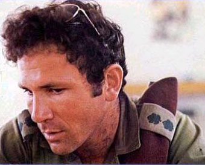
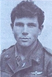
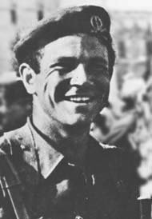

तो प्रस्तुत है मित्रों एक और चित्र पहेली, यहाँ दिया गये चित्र एक बहादुर सैनिक अधिकारी के है, जिन्होने अपने देश के लोगों को बचाते हुए अपने प्राणों की आहूति दी थी। आपके मन में प्रश्न जरूर उठा होगा कि प्राणों की आहूति तो हजारों- लाखों सैनिकों ने दी इनमें क्या खास बात है?
इस महान सैनिक की खास बात यह है कि उन्होने अपने प्राण ऐसे मिशन पर गवाँए, जैसा मिशन हमारा भारत देश चाहकर भी नहीं कर पाया और दुश्मन (अपराधी) के सामने अपने घुटने टिका दिये थे।
और हाँ इनके भाई बाद में एक देश के प्रधानमंत्री भी बने थे…. आपको यह बताना है कि नीचे दिये गये चित्र में जो महान सैनिक है उनका नाम क्या है और वे किस मिशन में वे शहीद हुए थे?
(इस पहेली का उत्तर देने में पिछली बार ही की तरह एक दो दिन का समय लग सकता है)


